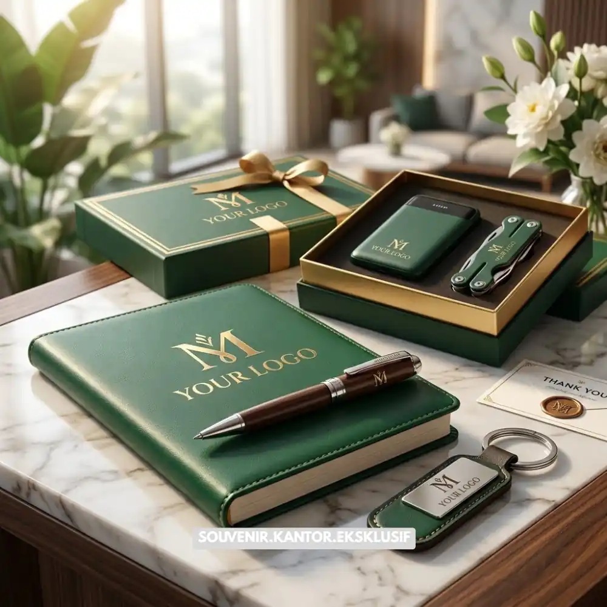
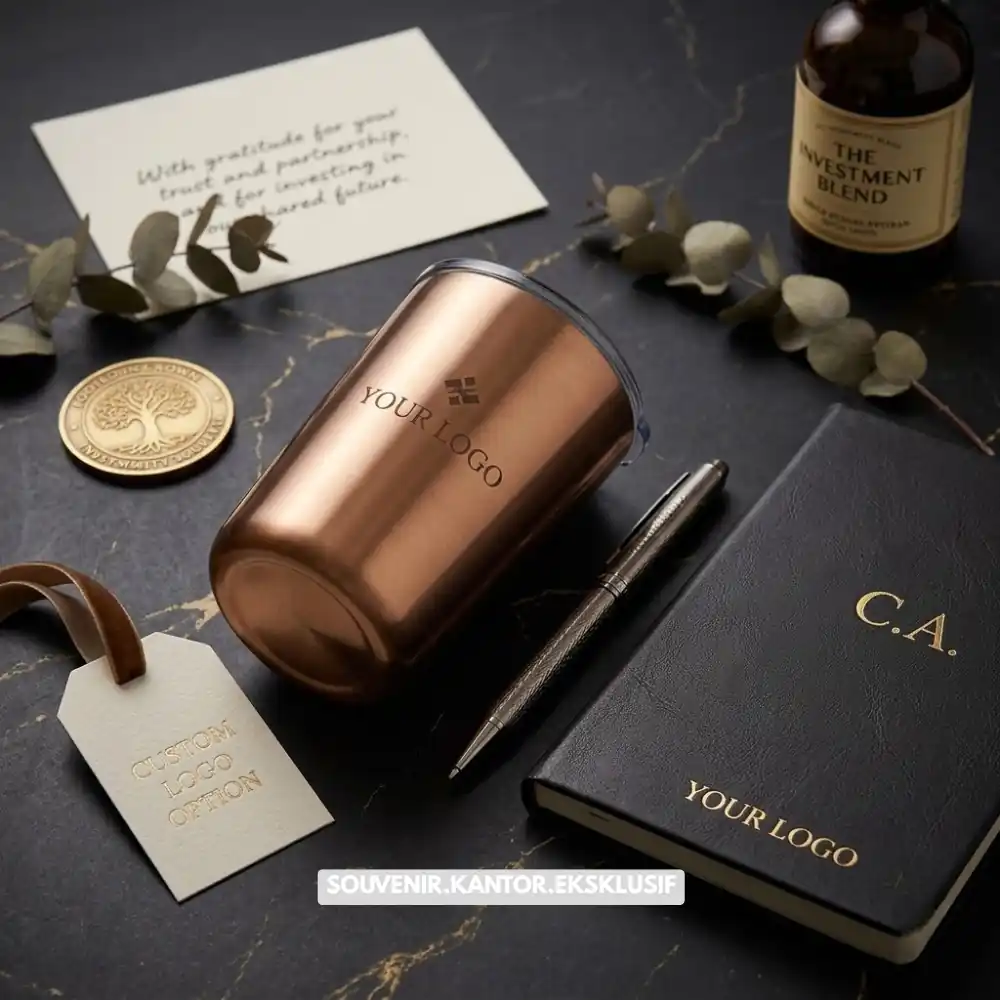

Daftar Isi
Souvenir custom logo perusahaan adalah produk hadiah yang dicetak dengan identitas visual brand seperti logo, nama perusahaan, atau tagline, menggunakan teknik cetak yang disesuaikan dengan jenis material produk.
Souvenir jenis ini digunakan perusahaan sebagai media branding berkelanjutan yang melekat pada aktivitas penerima sehari-hari. Ketepatan teknik cetak dan kualitas material sangat menentukan hasil akhir tampilan logo pada produk.
- Custom logo memperkuat identitas visual brand secara berkelanjutan.
- Teknik cetak dipilih berdasarkan jenis material produk souvenir.
- Konsistensi warna dan proporsi logo memengaruhi kesan profesional.
- Proses produksi mencakup desain, proofing, hingga cetak massal.
- Souvenir custom logo efektif untuk klien, karyawan, dan acara korporat.
Apa Itu Souvenir Custom Logo Perusahaan
Souvenir custom logo perusahaan merujuk pada produk hadiah yang telah melalui proses percetakan identitas visual perusahaan, baik berupa logo, nama brand, maupun kombinasi keduanya. Proses ini membedakan souvenir generik dengan souvenir yang secara khusus mewakili identitas perusahaan pemberi hadiah.
Konsep ini banyak diterapkan pada berbagai kategori produk seperti alat tulis, perlengkapan minum, tas kerja, hingga aksesori elektronik. Setiap kategori produk memiliki karakteristik material yang berbeda, sehingga teknik cetak logo yang digunakan juga perlu disesuaikan agar hasil akhir tetap rapi dan tahan lama.
Jenis Produk yang Umum Dijadikan Souvenir Custom Logo
Beberapa jenis produk yang umum dijadikan souvenir custom logo perusahaan antara lain notebook, pulpen, tumbler, mug, tas kanvas, dan power bank. Pemilihan jenis produk biasanya disesuaikan dengan target penerima serta relevansi fungsional produk terhadap aktivitas kerja sehari-hari, sehingga logo perusahaan memiliki peluang lebih besar untuk terlihat secara berulang.
Mengapa Custom Logo Penting untuk Strategi Branding Korporat
Custom logo pada souvenir perusahaan penting karena menciptakan eksposur brand yang berkelanjutan setiap kali produk digunakan oleh penerima. Berbeda dengan media iklan konvensional yang bersifat sementara, souvenir dengan logo dapat digunakan penerima dalam jangka waktu yang cukup lama, sehingga pesan brand terus terpapar secara berulang.
Data dari lembaga riset promotional product di Amerika Serikat pada 2023 mencatat bahwa produk promosi ber-logo umumnya disimpan penerima dalam kurun waktu yang cukup panjang, memberikan nilai eksposur brand yang jauh lebih efisien dibandingkan biaya iklan konvensional dalam periode yang sama.
Selain nilai eksposur, custom logo juga membantu membangun konsistensi identitas visual perusahaan di berbagai titik interaksi dengan klien maupun karyawan, memperkuat brand recall dalam jangka panjang.

Souvenir Custom Logo Premium untuk Branding Maksimal
Peran Konsistensi Visual dalam Branding melalui Souvenir
Konsistensi warna, tipografi, dan proporsi logo pada setiap produk souvenir turut memengaruhi kekuatan identitas brand secara keseluruhan. Logo yang diterapkan secara konsisten pada berbagai jenis produk membantu penerima mengenali brand secara lebih cepat, bahkan tanpa perlu membaca nama perusahaan secara eksplisit.
Bagaimana Proses Pembuatan Souvenir Custom Logo Berlangsung
Proses pembuatan souvenir custom logo umumnya dimulai dari tahap konsultasi kebutuhan, dilanjutkan dengan penentuan jenis produk dan material, desain tata letak logo, proofing atau contoh cetak, hingga proses produksi massal. Setiap tahap memiliki peran penting untuk memastikan hasil akhir sesuai dengan identitas visual perusahaan.
Tahap proofing menjadi salah satu tahap krusial karena memungkinkan perusahaan melakukan pengecekan hasil cetak logo sebelum masuk ke tahap produksi dalam jumlah besar. Hal ini membantu meminimalkan risiko kesalahan cetak yang dapat berdampak pada seluruh batch produksi.
Teknik Cetak Logo Berdasarkan Jenis Material
Teknik cetak logo disesuaikan dengan karakteristik material produk. Material kayu dan logam umumnya menggunakan teknik laser engraving untuk hasil yang presisi dan tahan lama. Material kulit sering menggunakan teknik emboss atau debossing untuk kesan premium tanpa warna tambahan. Sementara material kain, plastik, dan keramik umumnya menggunakan teknik sablon atau printing digital yang mampu menghasilkan warna logo lebih variatif.
Pemilihan teknik yang tepat berdasarkan material produk sangat menentukan daya tahan dan kejelasan tampilan logo dalam jangka panjang.
Kesimpulan
Souvenir custom logo perusahaan merupakan elemen penting dalam strategi branding korporat yang berkelanjutan. Pemilihan teknik cetak yang sesuai material, konsistensi visual logo, serta proses produksi yang terstruktur menjadi kunci keberhasilan penerapan custom logo pada produk souvenir.
Wujudkan souvenir custom logo perusahaan Anda bersama VendorSouvenir.web.id. Konsultasikan kebutuhan branding korporat Anda sekarang dan dapatkan hasil cetak logo premium yang tahan lama.

Butuh Bantuan Merancang Souvenir Custom Logo?
Tim ahli kami siap membantu Anda menyusun paket hadiah eksklusif yang menarik.
Pilihan barang akan disesuaikan dengan ketersediaan budget dan kebutuhan Anda.
FAQ Souvenir Custom Logo
Apa itu souvenir custom logo perusahaan?
Souvenir custom logo perusahaan adalah produk hadiah yang dicetak dengan identitas visual brand seperti logo atau nama perusahaan menggunakan teknik cetak yang disesuaikan dengan material produk.
Teknik cetak apa yang cocok untuk produk kulit?
Produk berbahan kulit umumnya menggunakan teknik emboss atau debossing untuk menghasilkan kesan premium tanpa tambahan warna.
Bagaimana cara memesan souvenir custom logo di VendorSouvenir.web.id?
Perusahaan dapat menghubungi tim VendorSouvenir.web.id untuk konsultasi jenis produk, material, dan teknik cetak logo yang paling sesuai kebutuhan.
Maroon Souvenir
Partner Corporate Gift terpercaya di Indonesia. Berpengalaman melayani ratusan perusahaan sejak 2018.
Lihat Portofolio Kami